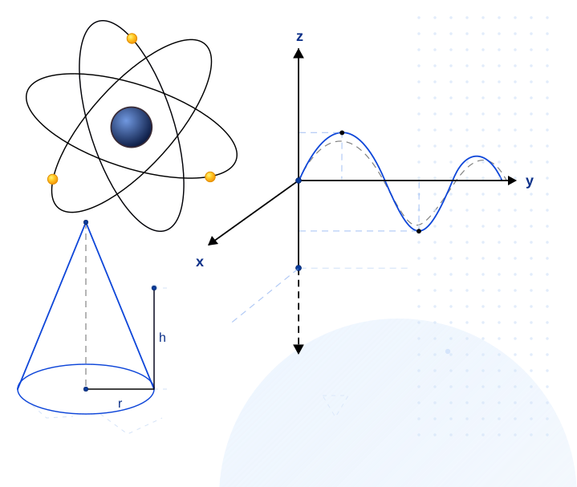

Farmacia y Bioquímica
- Física
- Matemática
Preparación para parciales y finales con un enfoque centrado en la comprensión de los conceptos y la resolución de problemas.
 ¿No sabés si doy tu materia? Escribime indicando la carrera y la asignatura. Te respondo sin compromiso.
¿No sabés si doy tu materia? Escribime indicando la carrera y la asignatura. Te respondo sin compromiso.

Trabajo con los programas, las guías y las modalidades de evaluación de cada carrera y universidad.
Consultame por el programa específico de tu carrera.
La forma de trabajo se adapta a las necesidades de cada estudiante.
Clases online con intercambio de material y resolución conjunta de ejercicios.
En Belgrano o Ciudad Universitaria, según disponibilidad.
Trabajo uno a uno, adaptado al ritmo y a las dificultades concretas.
Para estudiantes que comparten materia, objetivos o nivel de avance.
Duración flexible. Cada clase dura como mínimo una hora y puede extenderse en intervalos de treinta minutos, acordándolo clase a clase.
Tu objetivo inmediato puede ser aprobar. Pero la forma más sólida de conseguirlo es que entiendas qué estás haciendo y por qué.
No se trata de repetir recetas, sino de entender los principios que permiten resolver problemas nuevos.
Cada clase parte del programa, las guías y los criterios de evaluación de tu carrera.
Trabajamos con ejercicios comparables a los que aparecen en parciales y finales.
Buscamos que puedas enfrentar ejercicios nuevos con autonomía y seguridad.
Acompaño a estudiantes universitarios en la preparación de materias de Física y Matemática, desde cursos introductorios hasta contenidos avanzados.
Mi objetivo es que puedas preparar el examen que necesitás sin quedar atado a procedimientos mecánicos. Si solo aprendés una receta, corres el riesgo de que te cambien el ejercicio. Comprender los conceptos te permite construir un método de resolución aplicable a problemas nuevos.
Las reseñas definitivas conservarán la voz original de cada estudiante y se publicarán con su autorización.
Llegué a Emanuel buscando ayuda para preparar el recuperatorio del segundo parcial y, posteriormente, el final de la materia. Tuvimos muchas clases, ya que a mí me costó mucho entender la materia durante la cursada y teniamos poco tiempo hasta el examen. El tema que mas me costo entender fue electromagnetismo, que despues lo termine entendiendo muy bien. La dinámica de las clases busca que el tema se entienda antes de empezar a resolver ejercicios. Así el alumno tiene cierta independencia para poder pensar y, en caso de no entender algo, Emanuel busca alguna otra forma de explicarlo hasta que quede claro. Sus clases me ayudaron a aprobar la materia. Gracias a sus explicaciones, paciencia y buena predisposición para enseñarme. No solo por las clases en sí, sino también porque me ayudó a plantear los ejercicios de otra forma.
Preparé la materia Fisica. Lo que más me costaba eran los ejercicios y entender conceptualmente los temas. Me ayudó mucho la explicación teórica, lo cual impacto de manera positiva en la práctica. Gracias a eso pude finalmente rendir ambos parciales y el final.
Se trabaja mediante videollamada, compartiendo pantalla y resolviendo ejercicios en conjunto. El material puede intercambiarse antes o después de cada encuentro.
El valor depende de la modalidad, la duración, la cantidad de estudiantes y las características de la materia. La información se brinda por WhatsApp después de conocer la consulta.
Sí. Los grupos reducidos son adecuados cuando los estudiantes comparten materia, nivel y objetivos. También es posible consultar por una clase individual.
No. También pueden utilizarse para acompañar la cursada, resolver dificultades puntuales o trabajar unidades específicas.
Cuanto antes, mejor. Sin embargo, también podés consultar por una preparación intensiva y evaluaremos qué es posible trabajar en el tiempo disponible.
Escribime por WhatsApp y contame qué carrera cursás, cuál es la materia y qué examen necesitás preparar.
Consultar por WhatsApp El presupuesto depende de la modalidad, duración y características de las clases.
El presupuesto depende de la modalidad, duración y características de las clases.